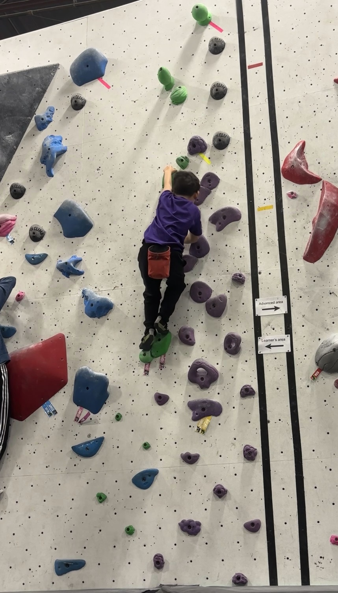
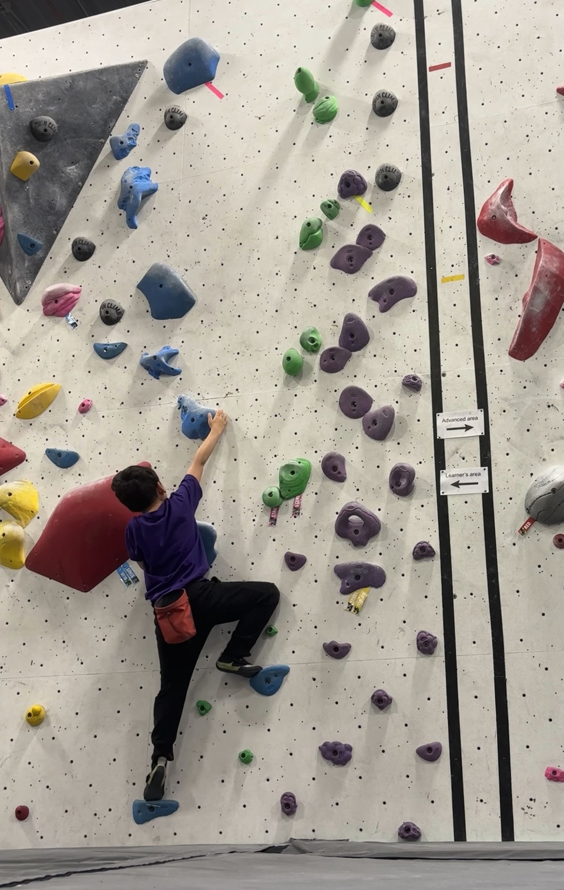

Try it
Every result below comes from the real deployed Lambda functions. First call after idle time may take 10–30s while they cold-start — everything after that is a couple seconds.

1. The wall

2. The climber
1Camera
2Scan the wall
Point the camera at an empty section of wall, then scan.
3Climb
Step into frame for a live suggestion every couple of seconds.